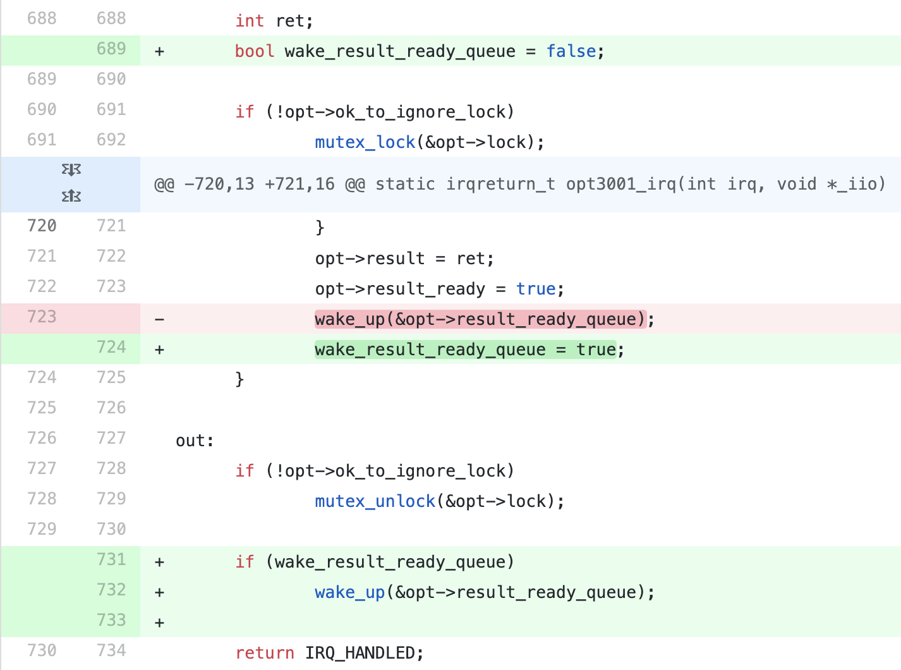
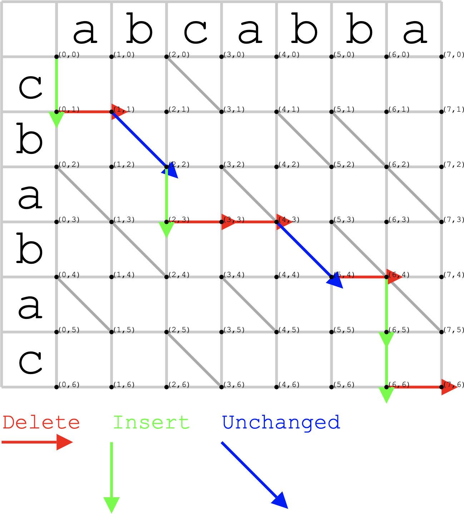
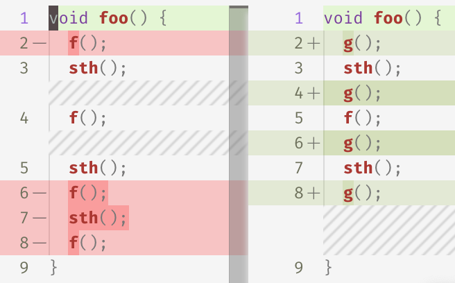
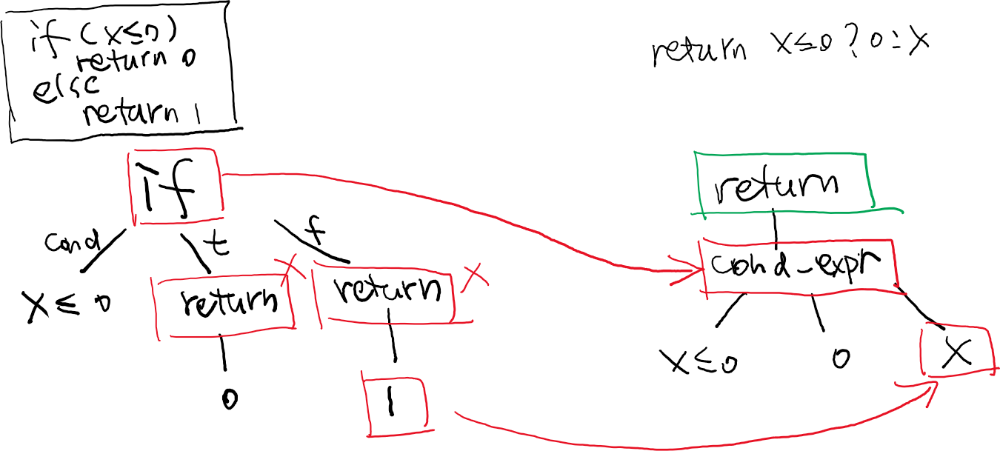
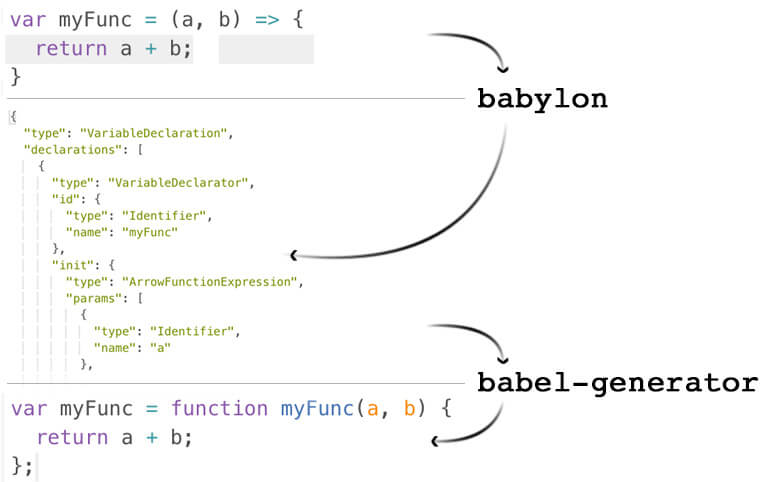

<html>
  <Head>
<meta http-equiv="Content-Type" content="text/html; charset=utf-8">

    
<link rel="stylesheet" href="../static/css/bootstrap.min.css"/>
<link rel="stylesheet" href="../static/css/bootstrap-theme.min.css"/>


    <link rel="stylesheet" href="../static/css/fonts/crmison.css"/>
    <link rel="stylesheet" href="../static/css/fonts/fira_code.css"/>
    <link rel="stylesheet" href="../static/css/fonts/ptsans.css"/>
    <link rel="stylesheet" href="../static/css/katex.min.css"/>
    <link rel="stylesheet" href="../static/css/wiki.css"/>
    <link rel="stylesheet" href="../static/css/codehilite.css"/>

    <script src="../static/js/jquery.min.js"></script>
    <script src="../static/js/bootstrap.bundle.min.js"></script>
    <script src="../static/js/katex.min.js"></script>
    
<link rel="stylesheet" href="../static/css/wiki.css"/>
<link rel="stylesheet" href="../static/css/slides.css"/>


    <title>扫描源代码</title>
  </Head>
  <body>
   
   
<textarea id="source">
public: True
class: center, middle

# 扫描源代码

蒋炎岩 <jyy@nju.edu.cn>

<div class="row justify-content-md-center">
  <div class="center author-block">
    <p><a href="http://www.nju.edu.cn/">南京大学</a></p>
    
  </div>
  <div class="center author-block">
    <p><a href="http://cs.nju.edu.cn/">计算机科学与技术系</a></p>
    
  </div>
  <div class="center author-block">
    <p><a href="http://moon.nju.edu.cn/">计算机软件研究所</a></p>
    
  </div>
</div>

---

# Research Proposal 截止日期

.red[2019 年 10 月 24 日] (一周后)

* 课堂上公开处刑同学们的 research proposal
* 不超过 4 + 1 页 (可以不到)

---

# 本讲概述

> 软件工程研究的对象是软件，即 “实现特定需求的信息产品”，包括代码、数据、文档、……
>
> 其中最难解析的就是代码：.red[我们能对代码做什么？怎么做？]

----

本讲概述

* 把程序作为文本分析
* 抽象语法树 (AST)
    * 扫描程序
    * 修改程序
    * 插桩程序

---
class: center, middle

# 把程序作为文本分析

---

# 词法分析

词法分析 (通常使用正则表达式)

* [正则表达式：我也是程序，我也需要分析](https://zhuanlan.zhihu.com/p/46294360)

----

```python
"(a + b) * 2" =>
  [ (SYM, '('), (ID, 'a'), (BIN_OP, '+'), (ID, 'b'), (SYM, ')'),
    (BIN_OP, '*'), (INT, '2') ]
```

----

很多有关软件的问题，都可以通过词法分析解决

* 词出现的规律：On the naturalness of software
* 需求 (issues) 到代码的映射
* 研究程序员注释的习惯 ……

---

# 文本分析例子：Code Diff

代码作为文本分析的一个应用是大家常用的 diff

* 给定两份代码，如何生成行/每行内的 diff？

.center[]

---

# Diff = 求解编辑距离 (Myers'86)

.center[]

---

# 编辑距离：思考

“编辑距离最小” 的 diff 真的是我们想要的吗？

* Open research problem: 让程序员能更愉快地阅读 diff

.center[]

----

* 我们很容易知道 “改了什么”，但不知道 “为什么要这样改” (semantics diff)
* 如何展示一个很大的 diff
* .red[研究问题就来自于日常编程实践]！

---

class: center, middle

# 抽象语法树 (AST)

---

# AST

> A tree representation of the abstract syntactic structure of source code written in a programming language

----

一般编程语言都是用文法描述的

* 产生规则的推导过程自然构成一棵树 (AST 是它的简化)
* 同时包含词法和语法的信息 (部分语义信息，如类型)

---

# Clang AST Dump

使用非常简单：`clang -Xclang -ast-dump -fsyntax-only a.c`

```c
int f(int a, int b) { if (b == 0) return a; else { ... } }
```

----

```text
TranslationUnitDecl
...
|-FunctionDecl used f 'int (int, int)'
| |-ParmVarDecl used a 'int'
| |-ParmVarDecl used b 'int'
| `-CompoundStmt
|   `-IfStmt
|     |-BinaryOperator 'int' '=='
|     | |-ImplicitCastExpr 'int'
|     | | `-DeclRefExpr 'int' lvalue ParmVar 'b' 'int'
|     | `-IntegerLiteral 'int' 0
|     |-ReturnStmt
|     | `-ImplicitCastExpr 'int'
|     |   `-DeclRefExpr 'int' lvalue ParmVar 'a' 'int'
|     `-...
```

---

# Clang AST Dump (cont'd)

```c
return f(b, a % b);
```

----

```c
   ...`-CompoundStmt
        `-ReturnStmt
|         `-CallExpr 'int'
|           |-ImplicitCastExpr 'int (*)(int, int)'
|           | `-DeclRefExpr 'int (int, int)' Function 'f' 'int (int, int)'
|           |-ImplicitCastExpr 'int'
|           | `-DeclRefExpr 'int' lvalue ParmVar 'b' 'int'
|           `-BinaryOperator 'int' '%'
|             |-ImplicitCastExpr 'int'
|             | `-DeclRefExpr 'int' lvalue ParmVar 'a' 'int'
|             `-ImplicitCastExpr 'int'
|               `-DeclRefExpr 'int' lvalue ParmVar 'b' 'int'
...
```

---

# 预编译

C/C++ 特有的特性

* Java 不存在这个问题
* 其他语言可能有类似机制：rust 宏, Verilog generator, ...
* .red[不展开宏，程序就是非法的]

----

```c
#define declare(name) int f_##name(int x, int y)

declare(add) {
  return x + y;
}
```

---

# AST：预编译后的结果

```text
`-FunctionDecl f_add 'int (int, int)'
  |-ParmVarDecl used x 'int'
  |-ParmVarDecl used y 'int'
  `-CompoundStmt
    `-ReturnStmt
      `-BinaryOperator 'int' '+'
        |-ImplicitCastExpr 'int' <LValueToRValue>
        | `-DeclRefExpr 'int' lvalue ParmVar 'x' 'int'
        `-ImplicitCastExpr 'int' <LValueToRValue>
          `-DeclRefExpr 'int' lvalue ParmVar 'y' 'int'
```

----

思考题 (challenge)：.green[如果要分析预编译前的代码，怎么办？]

---

class: center, middle

# Playing with AST: 扫描程序

---

# AST 为我们提供了什么？

程序的结构化 “字面” 信息

* 先序遍历可以打印出程序
    * 子树代表了一段连续的程序
    * 将节点用 “`...`” 替代实现了源代码的折叠

---

# 应用：Lint

组织项目时，通常有 Style Guide，例如 [Google](http://google.github.io/styleguide/) 对 C++ 的要求：

* 一行不超过 80 个字符
* 变量名：all lowercase, 下划线 (`table_name`, not `tableName`)
* We do not use C++ exceptions; Avoid using Run Time Type Information (RTTI)...

----

Lint 就是最早出现的代码风格扫描工具，绝大部分规则可以基于 token/AST 检查

* 少量信息需要静态分析，如函数必须返回

---

# 应用：软件度量

Halstead’s software physics

* <math>n_1</math>/<math>n_2</math>: 程序中的不同 operator/operand 数量
* <math>N_1</math>/<math>N_2</math>: operator/operand 出现次数

----

一系列 metrics (统计量)，与一些软件属性存在相关性

* 越长的代码 bug 越多；越复杂的代码 bug 越多……

----

* program length <math>N = N_1 + N_2</math>
* program volume <math>V = N \log_2 (n_1 + n_2)</math>
* specification abstraction level <math>L = 2n_2 / (n_1 \cdot N_2)</math>
* program effort <math>E = (n_1 + N_2 \cdot N \cdot \log_2(n_1+n_2) ) / 2n_2</math>

---

# 应用：Clone Detection

.float-right[]
> “我们不生产代码，我们只是互联网的搬运工”
> * 代码克隆增加了一条隐藏的 specification: 一边改了，另一边也需要改
> * .red[时间长了就忘记了] → 下次重构的时候 break 了 specification...

----

* Token-based: “CCFinder: A multilinguistic token-based code clone detection system for large scale source code” (TSE, 28(7), 2002)
* Tree-based: “Scalable detection of semantic clones” (ICSE'08)

---

# AST Diff

AST 上的 diff 能更好地反映程序结构的变化

.center[]

---

class: center, middle

# Playing with AST: 程序修改

---

# Code Formatting

现代 IDE 都能帮你格式化代码

* GNU indent, bcpp, [Google Java format](https://github.com/google/google-java-format), ...
* 格式化代码 = 遍历 AST 并按照特定规则打印

----

有一些 complications

```c
(1+2)*(3+4) =>
  (1+2) * (3+4) or
  (1 + 2) * (3 + 4) ?
```

Research Problem
* 求解一个.red[对源代码改变最小且满足 style guide] 的代码

---

# 例子：Babel

Transcompiler (transpiler), source-to-source compiler

* ES6/ES10/JSX → ES5 (保证浏览器兼容，例如 IE8)

.center[]


---

# Program Mutations

Mutation testing: 度量测试用例集的好坏

* 在程序里植入一些随机的 bugs (potentially bugs)
* 越多 mutants 被检测出来，说明测试数据越充分

---

# [*µJava*](https://cs.gmu.edu/~offutt/mujava/): 实现

没什么难的……

```Java
public class UOI_Writer extends MutantCodeWriter {
  private static final String uop_string[] = 
    { "++", "--", "++", "--", "~", "!", "+", "-" };
  ...
  public void visit(Variable p) throws ParseTreeException {
    ...
    // op in uop_string
    if (mutant_op == UnaryExpression.PRE_DECREMENT || // --x
        mutant_op == UnaryExpression.PRE_INCREMENT) { // ++x
      mutated = "(" + op + p.toString() + ")"; // dump AST
    } else {
      mutated = "(" + p.toString() + op + ")";
    }
    ...
  }
}
```

---

# Automatic Repair

[GenProg](https://squareslab.github.io/genprog-code/)：一个看起来非常 crazy 的想法

* 在这几年热了一把，不过现在不那么热了

----

Test-based repair

* 定义一系列 mutation operators，就得到了一个程序转换的 search space
* 如果能找到一个程序通过测试用例，就实现了.red[自动程序修复]！

----

AST 的分析/修改/dump 是这一系列 fancy 技术的基础

---

class: center, middle

# Playing with AST: 程序插桩

---

# 程序插桩 (Program Instrumentation)

一类特殊的程序改写

* 不改变原先程序的行为
* 在程序中插入额外的 hooks
    * 收集程序的运行时行为
    * 改变程序的运行时行为

----

这也是一大类软件工程/系统软件的基础

* AST 可以做插桩；但大部分时候在 IR 层更容易 (.green[为什么？])

---

# 插桩：AST vs IR

AST 插桩相对复杂 (语言元素多)

* Pros: 有源代码的对应，有时能得到额外信息
* Cons: 语言成分复杂，插桩不易

----

IR 相对简单、经过优化 (LLVM: SSA; JVM: stack machine)

* Pros: 简单、优化
* Cons: 前端会有一些优化/转换，与 “代码” 不完全等价

---

# 例子：Mini UB Sanitizer

我们知道 signed integer overflow 是 UB，十分危险和有害

* 在运行时，对每个加法都进行溢出检查
* 例子：`foo(i++, j++) + (bar() / 2)`

----

把表达式 `(E1) + (E2)` 替换成 `CallExpr ubsan::add_chk(E1, E2)`

```c
template <typename U, typename V>
static inline auto add_chk(U a, V b) {
  int w = std::max(sizeof(a), sizeof(b));
  __int128_t lb = minval(w), ub = maxval(w);
  __int128_t sum = (__int128_t)a + b; // 作弊，有更好的办法
  if (!(lb <= sum && sum <= ub)) {
    std::cerr << a << " + " << b << " Overflow!" << std::endl;
  }
  return a + b;
}
```

</textarea>

<script src="../static/js/remark-latest.min.js"></script>

<script>
  var slideshow = remark.create();
</script>

    <script>
      $(function () {
        $('[data-toggle="tooltip"]').tooltip()
      })

      $("math").each(function() {
        var tex = $(this).text();
        var html = katex.renderToString(tex, {
          displayMode: $(this).attr('class') == 'block-math',
          throwOnError: false
        });
        $(this).replaceWith(html);
      });

      function get_token() {
        var match = document.cookie.match(new RegExp('(^| )token=([^;]+)'));
        if (match) return match[2];
        else return "";
      }

      var token = get_token();
      var hint = "token", box = $("#token-input");

      if (token == "") { box.val(hint); }
      else { box.val(token); }

      function login() {
        var token = box.val()
        document.cookie = 'token=' + token + '; expires=Fri, 31 Dec 9999 23:59:59 GMT;';
        if (token == '') {
          box.val(hint);
        }
      }
    </script>
  </body>
</html>